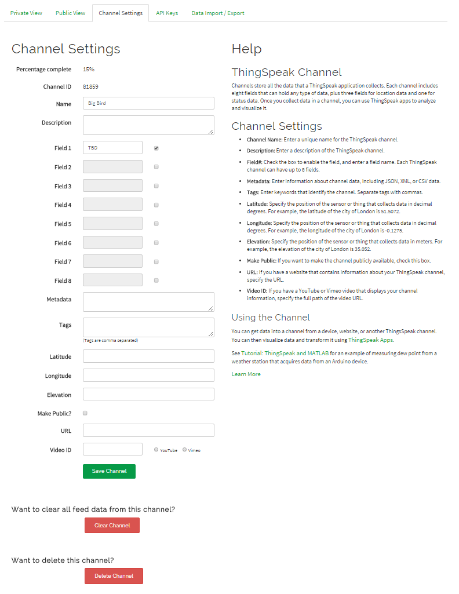
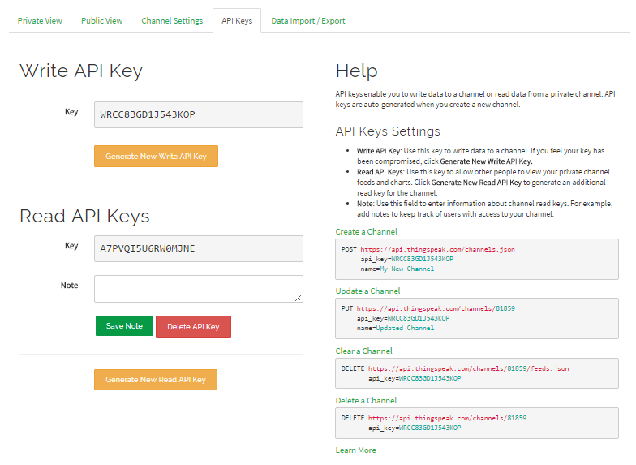
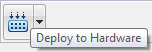

You can publish or retrieve data on your hardware board, such as sensor data, to the Internet of Things using ThingSpeak Write or from the Internet of Things using ThingSpeak Read block.
For more information about how to use ThingSpeak, visit their Apps, Plugins, or Tutorials topics.
Configure your Simulink® model to run on the target hardware.
Add a ThingSpeak Write or ThingSpeak Read block to the model.
(Optional) Open the ThingSpeak Write or ThingSpeak Read block and configure its parameters.
Connect signals from your model to the block input on the ThingSpeak Write block or block output on the ThingSpeak Read block.
Sign up for an account at https://thingspeak.com/ and log in.
Click Create New Channel.
Update the channel’s name and fields for the data you are publishing.

Click Update Channel.
Click the API Keys tab and copy the Write API Key/Read API Key.

In the ThingSpeak Write or ThingSpeak Read block, paste the key into the Write API key/Read API Key parameter.
Save your changes to the model.
Click Deploy to Hardware button.

After several minutes, the model application starts running on the target hardware.
On ThingSpeak.com, click the Private View tab or, if enabled, the Public View tab.
The view displays the data that your target hardware is publishing to ThingSpeak.